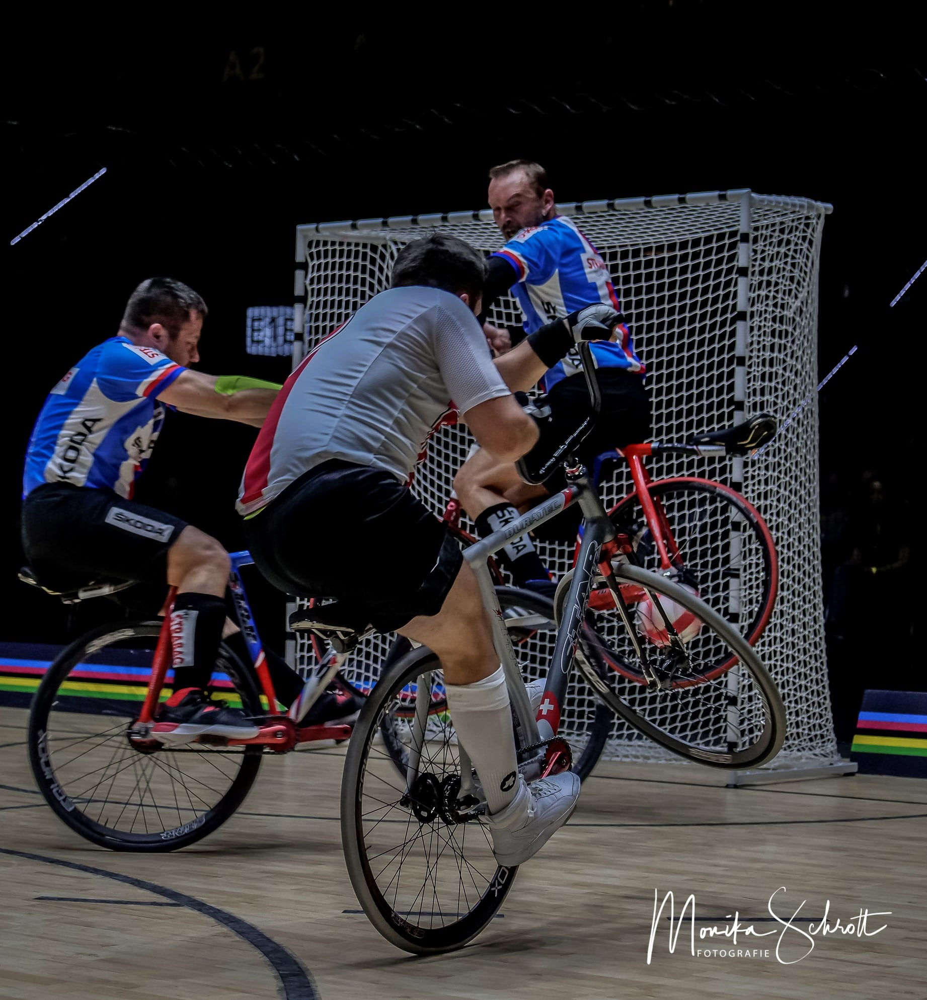
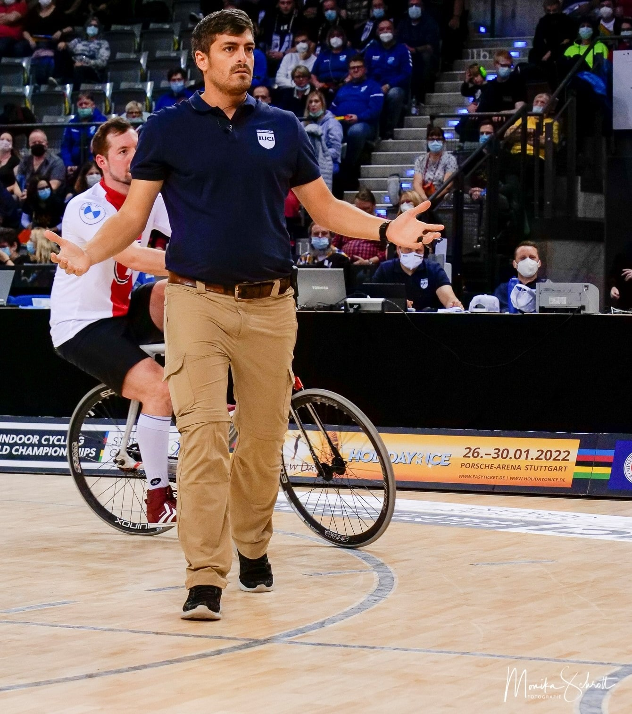

Was ist Radball?
Radball ist eine traditionelle Sportart und wird seit mehr als 100 Jahren gespielt. Auf einem speziellen Fahrrad wird versucht, vorwiegend mit dem Vorderrad den Ball im 2x2 Meter Tor zu versenken. Zu einer Mannschaft gehören zwei Spieler, Torwart und Feldspieler, wobei auch der Torhüter im Feld spielen darf und umgekehrt. Das Spielfeld ist international genormt und ist 14 Meter lang und 11 Meter breit. Es ist umgeben von einer 30 Zentimeter hohen Schrägbande. Die Spielzeit beträgt 2 mal 7 Minuten mit einer Halbzeitpause von maximal 2 Minuten zum Seitenwechsel. Die Wettkämpfe werden in der Regel im Turniermodus ausgetragen. Der Ball hat eine Kugelform, ist aus Stoff gefertigt. Der Durchmesser ist von 17 – 18 Zentimeter. Das Gewicht muss zwischen zwischen 500 Gramm und 600 Gramm liegen. Seine Geschwindigkeit erreicht bei Freischlägen bis zu 70 Stundenkilometer.
Die wichtigsten Regeln
Das Spielen des Balles mit Händen und Füssen ist nicht gestattet. Kopfbälle sind erlaubt, aber schmerzhaft. Im Strafraum, dem mit einer durchzogenen Linie von 2 Meter Radius, gekennzeichneten Halbkreis vor dem Tor, darf sich jeweils ein Spieler der verteidigenden sowie der angreifenden Mannschaft befinden. Der Torwart darf in seinem Strafraum auch die Hände zur Ballabwehr nutzen. Ein 4 Meter-Strafstoss wird bei Vergehen im eigenen Strafraum und groben Regelverstössen ausserhalb des Strafraums verhängt. Eckball, verursacht durch den Verteidiger, wird von einem fixierten Punkt geschlagen. Bei Bodenberührung während des Spiels mit Fuss oder Körper ist der betreffende Sportler erst wieder spielberechtigt, wenn er die Toraussenlinie des eigenen Tores überquert hat.